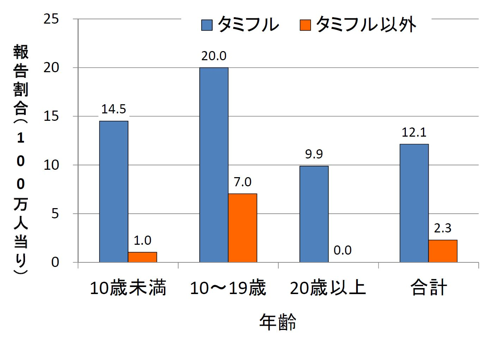
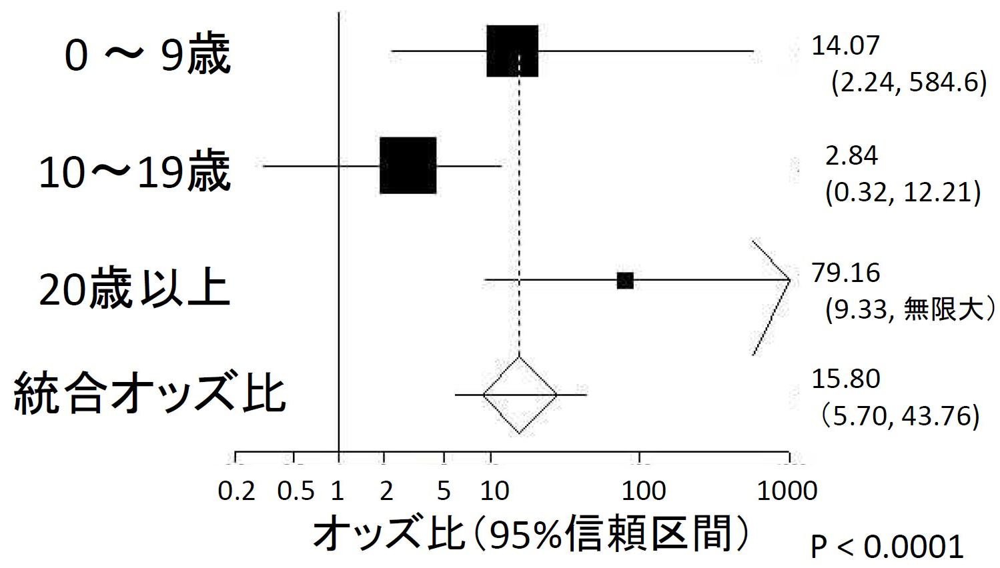
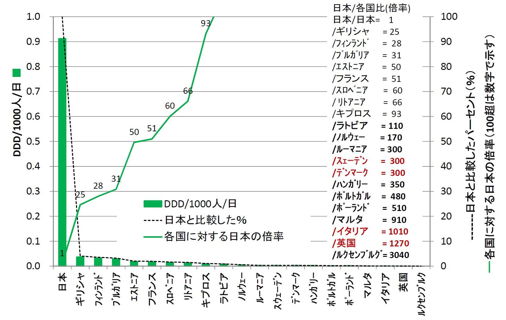

インフルエンザの治療用の薬剤はノイラミニダーゼ阻害剤と呼ばれます。タミフル(内服５日間）、リレンザ（吸入5日間）、イナビル（吸入１回）が主に用いられています。これらを使用した子らが「異常行動」を起こしたとの報告があとを絶たないため、厚生労働省は、「部屋に鍵をかける」などの対策を呼びかけるという方針を決めたと報道されています。
厚生労働省の報告では、これらの薬剤使用後に、「急に走り出した」「部屋から飛び出そうとしたといった異常行動を起こしたとの報告が、昨シーズン（2016/17年）に54件ありました。厚生労働省は、いずれも因果関係は不明としていますが、その多くは、医師が何らかの関連を認めて報告したものです。ですから、「因果関係は不明」とは、本当は言えないのです。
一方、厚労省はこれまで、「薬を飲んだあとの２日間は子どもを１人にしない」よう呼びかけていましたが、こうした異常行動の報告があとを絶たないことから、新たな通知を出す方針を決めたと報道されています。
新たな通知には、「部屋に鍵をかける」「飛び出しや飛び降りを引き起こす環境に子どもを置かない」といった具体的な対策を呼びかけることが盛り込まれる予定とのことです。
54件の内訳は、タミフルが38件、リレンザ11件、イナビル５件でした。10歳未満、10代、20歳以上で分けると、タミフル（19,1,18）、リレンザ(1,10,0)、イナビル(0,5,0)でした。服用推定数はタミフル313万人、リレンザ197万人、イナビル475万人でした。
厚労省のサイトには、年齢別にも服用者数が出ているので、年齢別に調整して、タミフルと非タミフルで異常行動の起こりやすさを求めました。
すると、タミフルが15.8倍（95％信頼区間：5.7, 43.8、p<0.0001）と、タミフルで著しく異常行動が起こりやすいということが分かります。
| 図１ 異常行動の起こりやすさ（タミフル 対 タミフル以外） | |
|---|---|
| a)100万人当り報告数 | b)メタ解析結果（年齢別オッズ比） |
|  |  |
タミフルでもタミフル以外でも、100万人中の異常行動の報告割合は10代が最も高いのですが（図1a)、タミフル以外と比較した倍率（オッズ比：図1b）でみると、10歳未満や20歳以上の方が大きい。
10代で倍率が小さかった理由として最も考えられるのは、10代にはタミフルは「原則として禁止だという点です。10代にタミフルを処方して、異常行動が起こった場合、医師は報告しにくいはずですから、他の年齢層と異なるのは、そのためでしょう。
異常行動後に事故死亡した例が、昨シーズンは２人いました。リレンザ使用後が１人、イナビル使用後が１人でした。従来は、全報告に占める異常行動後の死亡例は、タミフルでは30人いましたが、リレンザでは０でした。全報告に占める異常行動後の死亡の報告オッズ比は、41.39 (95%CI: 2.53, 677.9, p<0.0001)という高い値を示していましたので、リレンザで１人増えたとしても、この傾向には変化はありません。むしろ、10代で異常行動後の死亡例が多いので、これも、タミフル群で仮に起こっていたとしても、報告されないという恐れが大きいでしょう。原則禁忌で使って死亡すれば、医療過誤訴訟にもなりかねないのですから。
もう一つは、厚労省は、公表に際して、選別している可能性があります。他の分析結果では、2004年以降は、選別して公表していると考えられるからです。しかも、重症例ほど公表が少ない可能性があります。
したがって、タミフルでは、どの年齢でも、異常行動を極端に起こしやすく、しかも死亡につながる例が多いと言えます
日本では、インフルエンザに罹ると、たいていの人は受診します。検査を受け、タミフルなどノイラミニダーゼ阻害剤が処方されています。欧米ではどうでしょうか。
| 図２ 日本のタミフルなどノイラミニダーゼ阻害剤使用は異常 |
|---|
|  |
| 日本はフランスの50倍、スェーデンの300倍、英国の1200倍超 |
欧米では、インフルエンザは、自然に治癒する軽い感染症なので、基本的には、「薬剤は不要」とされています。日本のように、誰もが医者にかかって、検査を受け、タミフルやリレンザなどのノイラミニダーゼ阻害剤の処方を受けるということはありません。
図２に、人口1000人あたりの抗インフルエンザウイルス剤の使用頻度を示しました。ヨーロッパでは、比較的処方の多いフランスでも、人口あたり、日本の50分の１、スウェーデンやデンマークは日本の300分の１、イタリアは1000分の１、英国では日本の1200分の１しかタミフルやリレンザを使っていません。イナビルは欧米では承認もされていません。
WHOは、2017年６月の改訂で、タミフルを必須薬剤の主要リストから外す措置をとり、次回の改訂では、削除を示唆しています。
現在、英国やWHOでも、インフルエンザで重症化のおそれのある糖尿病合併者や高齢者、腎障害など、ハイリスクと言われる人にのみ、推奨しています。しかし、私も参加して検討したコクランのノイラミニダーゼ阻害剤チームの検討結果では、タミフルは、糖尿病や腎障害、精神症状、頭痛を起こしやすく、ハイリスクの人には、かえって危険であると考えられました。
結局、当センターで以前から主張してきているように、タミフルなどノイラミニダーゼ阻害剤は、健康な人には不要であり、ハイリスクの人には逆に危険でさえある、ということになり、使い道のない「もの」でしかない、というのが結論です。
その理由について、詳しくは、こちらをご覧ください。
なお、リレンザやイナビル服用後に異常行動、特に死亡するような事故を起こす場合、抗ヒスタミン剤や、咳止め、ある種の抗生物質、抗アレルギー剤などの成分が関係していることが多く、それがリレンザやイナビルによる異常行動と報告されていることがしばしばあります。
抗ヒスタミン剤や咳止め、抗生物質などもインフルエンザには無効です。きつい解熱剤（非ステロイド抗炎症剤）は害が大きいので使わないこと。そして、インフルエンザに は、十分な睡眠と休養が最も大切であることを、今一度見直してください。
WHOによるタミフルの格下げは、速報No175を参照ください。